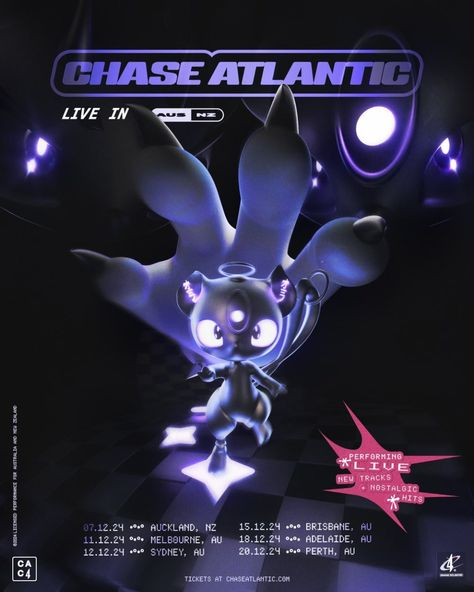
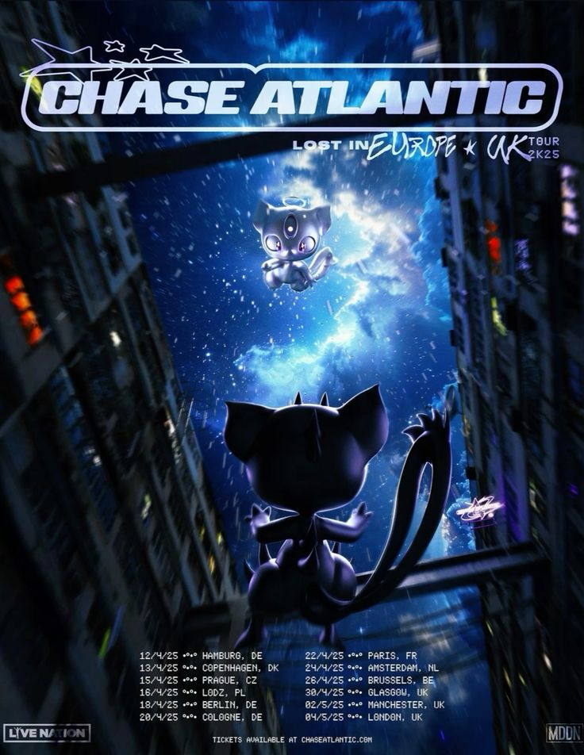

Nouvel album LOST IN HEAVEN

Chase Atlantic reviens en force avec un nouvel album en cette fin d'année 2024. Composé de 13 nouvelles chansons, LOST IN HEAVEN aborde un "son plus mature" et est inspiré de sujets comme la solitude, la dépression et la peur. Le guitariste et vocaliste Christian Anthony a déclaré que le titre LOST IN HEAVEN est "l'idée d'être exactement là où nous voulons être dans la vie, mais toujours misérable".
Tournée mondiale


Sortant tout juste de la première partie de leur tournée, qui c'est déroulée en Amérique du Nord, Chase Antlantic amorce désormais leur seconde partie, cette fois-ci en Océanie. Ils concluront ensuite cette tournée mondiale en Europe avec la troisième et dernière partie. Ils auront fait au total 44 dates et visité 12 pays.